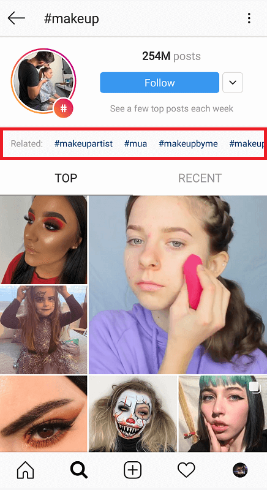
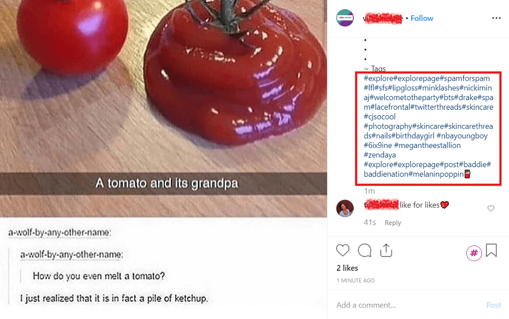
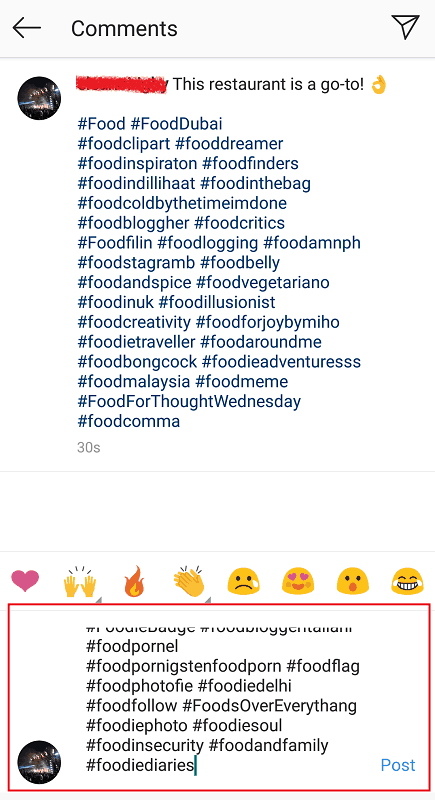
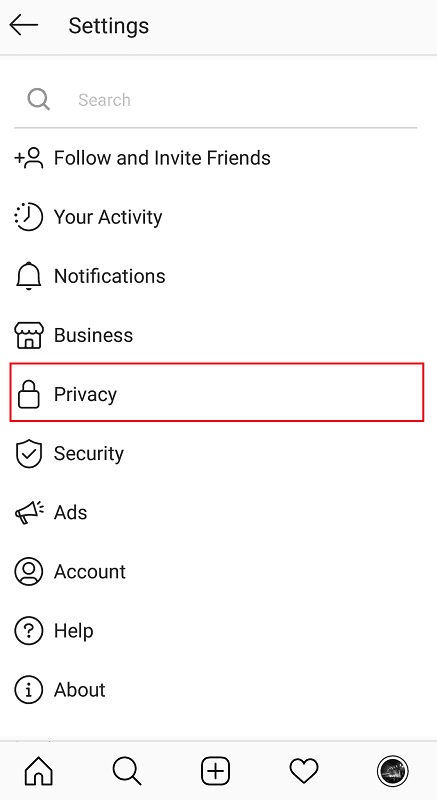
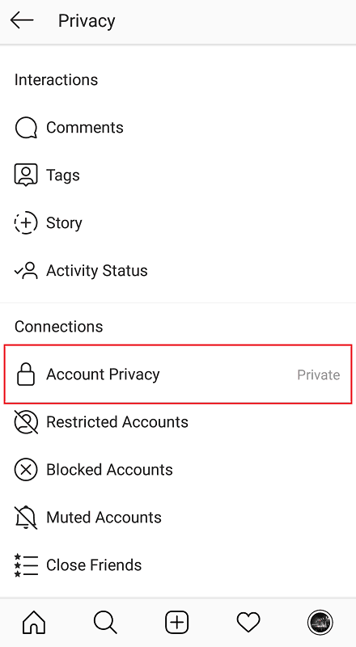
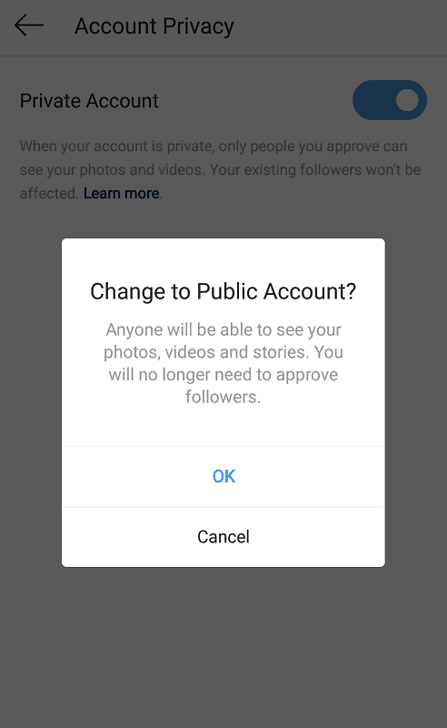

When it comes to boosting engagement, you can never go wrong with Instagram hashtags.
They’re a simple, quick way of getting a target audience to view your posts; regardless of the size of your following. In fact, research shows that posts with hashtag get up to 12% more interaction than those that don’t.
Yet, the method isn’t foolproof. Users may occasionally find that their typical hashtag strategy ceases to work, and there may be a number of reasons behind this.
Here at Socialfollow, we break down the importance of having an Instagram hashtag strategy – and why your current game has suddenly stopped working.
First Off, Why Use Instagram Hashtags?
Before diving into poor hashtag practices, why use them in the first place?
As mentioned, hashtags are quick, easy way of gaining the post exposure you’re after. These tags categorize your image or video into their specific niche or Instagram community, helping users in your target market discover your content.

For example, foodies will likely tag their posts as “#foodlovers” or “#foodieadventures”; getting the attention of other cuisine-obsessed users ion the platform.
Courtesy of hungryfoodie (Instagram account).
Instagram hashtags are also effective for establishing “branded” tags. The Rainforest Cafe promotes their own company name as a hashtag for curating user-generated content.
Courtesy of rainforest_cafe (Instagram account).
Customers are then encouraged to take pictures of their food, uploading to their feeds with a “#rainforestcafe” hashtag in the hopes of getting featured on the business’ Instagram account.
How Instagram Hashtags Boost Your Engagement
When more users find your content through hashtags, the more likely they’ll leave a like or comment. As we all know, the more interactions a post received on Instagram – the greater chance of the algorithm recognizing this as “quality content”; thus ranking it higher on followers’ feeds and the Explore page.
Since the algorithm now acknowledges the types of content you’re most attracted to based on history; the more frequently your hashtagged posts are seen by the same users – the more likely Instagram will recommend more of your content to them.

This results in more engagement through likes, comments, shares, and follows!
As mentioned previously, by promoting your very own “branded hashtag”, you’re also encouraging users to spread the word on you and your business.
Courtesy of urbandecaycosmetics (Instagram account).
Hashtags are integral to the networking and brand-building practices of Instagram. But what happens when they stop taking effect? Oftentimes, users will find that their usual strategy doesn’t have the same impact as it did previously; or that their efforts in hashtagging aren’t as fruitful as they’d hoped.
Why Are My Instagram Hashtags Not Working?
From using the “wrong” hashtags to violating Instagram guidelines, there are a myriad of reasons why your hashtag game fails to have the right effect.
Instagram Hashtags Not Working – Reason #1: They Aren’t Diverse Enough
There’s an art to using the right hashtags for your content. With over 95 million posts uploaded every day, you’re faced with high competition against those using the same tags – especially for generic ones like “#fashion”, “#food”, or “#travel”.

As such, it’s important to narrow down your hashtags and use ones more specific to your target communities. You’ll not only have less competition to worry about, but you’ll be targeting potential followers with a true interest in your niche as you do.
If your account is dedicated to horror movies, for example; instead of generic, saturated tags like “#popculture” or “#films” – opt for more niche hashtags like “#horrorobsessed” or “#horrornerd”.
Courtesy of tonymichaelphoto (Instagram account).
To discover these hashtags, try searching for a generic tag on the platform, and sift through Instagram’s suggestions. Alternatively, you can use third-party tools such like RiteTag or Tailwind.

You don’t, however, want to get too specific. Posts with super-niche hashtags – while competing among less posts – can hamper your discoverability. At the same time, those “big-hitting” tags will likely have your posts lost in the noise.
To get the right balance, you’ll want to mix up your tags between highly-targeted hashtags and those that appeal to larger audiences. You do have a 30-hashtag limit after all, so make use of it!
Instagram Hashtags Not Working – Reason #2: You’re Cheating Your Hashtag Strategy
Instagram offers plenty of creative freedom – not only content creation, but in one’s marketing efforts, as well.
As such, there’s no one, golden method of strategizing your hashtag use. As with other ways of promoting your account, you can get as clever as you wish with this feature (i.e. using them in contests, relying on third-party hashtag generators)…
Courtesy of tortugasunglasses (Instagram account).
…to a certain extent, that is. To keep things fair and regulated, Instagram has established a number of community guidelines for a cleaner, less spammy user experience. This includes the well-known hashtag limit, and promoting variation among different posts.
Discovered that your Instagram hashtags have stopped working? Perhaps you’ve committed one or more of these bad practices.
“Recycling” Hashtags
Copying and pasting the same block of hashtags into each post may seem like a convenient technique. Saves you the hassle of typing in a new group each time, right?
While that may be true, Instagram may acknowledge this as “spammy” behaviour. Under their community guidelines, they explicitly state the importance of offering authentic, valuable content; rather than implementing robotic methods to rack up the likes and follows.

Courtesy of carinamalea (Instagram account).
Getting caught with this behaviour results in a “shadowbanned” feed or profile (a term we’ll dive into later), resulting in limited reach and engagement.
To avoid this, be sure to switch up your hashtags every once in a while. Users are commended to keep a recorded list of your most-used 40-50 hashtags, rotating between them for each new post.
Using Irrelevant Hashtags
Few things are more annoying on the app than searching up a hashtag and finding completely unrelated content. Imagine looking for “#cutepuppies” only to be served up a feed of WWF champions – sure, the photos may cool, but it ain’t what you’re after.

Like recycling previous hashtags, Instagram is quick to recognize as typical “spammy” behaviour. You’re not just riding the wave of trending tags for the artificial goal of increasing your reach – you’re ruining the experience for other users.
Avoiding this is simple: only use tags relevant to your posts! With such a wide community of varying interests, you’re bound to find hashtags with an active, engaged audience; all it takes is a little research.
Cheating the Limit
As clever as you think you’re being, it’s never a good idea to cheat the hashtag limit.
Users once implemented a now-banned technique of adding 30 hashtags as a comment on their post, then editing the original caption to add another 30.
It worked for a while, until Instagram caught on (as they typically do), rendering the method ineffective.

Another common “hack” to getting around their hashtag limit was maximizing their tags in the caption; getting that initial boost of interactions; then going back and pasting a new block of 30 hashtags.
Not only is it cumbersome, but app will likely see through your methods, penalizing you as a result.
It’s therefore best to stick to having your optimum hashtag group from the get-go, and improve on your strategy within Instagram guidelines.
Instagram Hashtags Not Working – Reason #3: Your Account is Private
Unfortunately, hashtags can only work if your account is set to public. If you have a business account, you’ll likely have a “public” setting on by default – but for those with personal profiles, you’ll want to make the switch for that extra exposure.
Doing so is simple – just enter your Instagram settings and access “Privacy”.

Tap “Account Privacy” under the “Connections” section.

Here, you can toggle between a public or private account.

Those looking to grow their profile will want their feed publicized for all to see – this is how you’ll engage in community conversation and connect with potential followers, after all.
Instagram Hashtags Not Working – Reason #4: You’re Using Banned Hashtags
Another common, yet-little known cause of an ineffective hashtag strategy is if yours involves “banned” hashtags.
Instagram deems these tags as often containing inappropriate or offensive content; thus (permanently or temporarily) blocking their content streams as a result.
While it’s simple to think up of provocative terms that easily have a place on this blacklist – many such hashtags can seem “innocent” on the outset. These include something as inoffensive as “#books” or “#leaves”.
Other times, such hashtags are banned for hosting “spammy” content. These are tags often “hi-jacked” by users to gain easy likes and reach. For example, “#beautyblogger” made the “banned” list for simply having a majority of irrelevant posts.
How to Find Banned Hashtags
To determine whether a hashtag is “banned” or in the clear, type it into Instagram’s search field.
“Banned” hashtags pop up with a completely blocked feed of content, displaying the following message.

Alternatively, plenty of websites host a complete, regularly updated list of Instagram’s banned hashtags for the year.
SocialInsider, for example, offers this information in alphabetical order.
Courtesy of Social Insider.
As part of good hashtag practice, it’s important to check a hashtag’s content before using it on your own posts.
This can help you avoid accidentally taking part in a irrelevant niches; like when the British baking company, Warburtons, unknowingly used a common hashtag among Instagram’s “furry” community.
Instagram Hashtags Not Working – Reason #5: You’ve Been Shadowbanned
“Shadowban” is the ominous term describing Instagram’s method of penalizing its users.
Those caught violating community guidelines or participating in shady, spammy behaviour are likely to experience its damaging effects. By being “shadowbanned”, the app restricts your exposure and visibility on the app – effectively reducing all your likes and comments in turn. Thus, this could be a major factor in your poor hashtag impact.

Different kinds of “inappropriate” behaviour can result in a shadowban, including the use of spammy bot services, fishy surges in your activity (often caused by unauthorized automated tools), and of course – bad hashtag practices.
Recovering from this penalty can take a while. Experts recommend affected users to ease up on their Instagram activity when this happens, and stick to fair, guideline-compliant practices at all times. Things tend to return to normal within a 24-48 hour timeframe; assuming you avoid committing any further violations.
How to Know if You’re Shadowbanned
The easiest way to find out if you’re shadowbanned is to get someone who doesn’t yet follow you (or ask a friend to temporarily unfollow you), and check the current feed of a hashtag from your latest post.
If your post fails to show up among the content, there’s a high chance you’re shadowbanned.
Another way to check this is to use Triberr’s Shadowban Tester. While it isn’t foolproof, it’s a simple, free way of diagnosing your last 10 posts for any evident sketchy practices.

Courtesy of Triberr.
Just type your name in the search field provided, and Triberr displays your most recent photos. A green checkmark is placed next to those displaying safe, compliant hashtag use.
Instagram Hashtags Not Working – Reason #7: They Look Spammy on Your Post
Perhaps your poor engagement is simply a matter of poor user experience.
By loading your posts with dense walls of hashtags, you effectively turn your viewer off from reading the rest of your caption. Put simply, it just doesn’t look good.
Courtesy of Follows.com.
Instead of turning every other word in your caption in to a linked hashtag, have a separate section for your tags further down the caption field.
Users typically write a meaningful, hashtag-free description of their post, then place their group of hashtags at the bottom of the caption, separated by a number of fullstops (or emojis!)

Courtesy of rainbugs_ky (Instagram account).
Alternatively, you can also post your hashtags in a comment on your post. This rids them from your caption altogether, boosting its readability.
Courtesy of trackclubbabe (Instagram account).
Be Sure You’re Using Best Hashtag Practices!
The effectiveness of hashtags make them an attractive, easy form of Instagram marketing. With routine use, you’ll quickly develop hashtag methods that suit your business and engagement best.
As discussed, however, it’s important to stick to best practices. Avoid techniques aiming to alter the standard user experience, or cheap “hacks” that clutter up the platform.
Instead, experiment with varying, creative ways of using this feature to connect with target audiences and raise your brand visibility. In time, you’re sure to find that well-deserved boost in reach and followers.